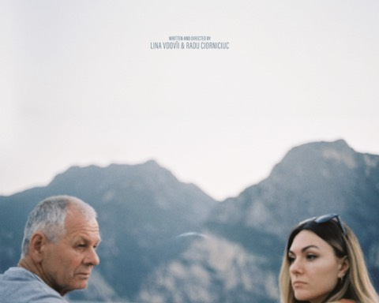
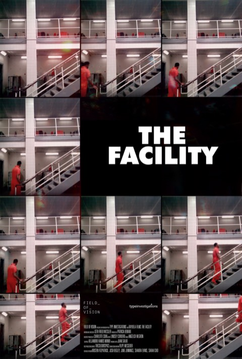
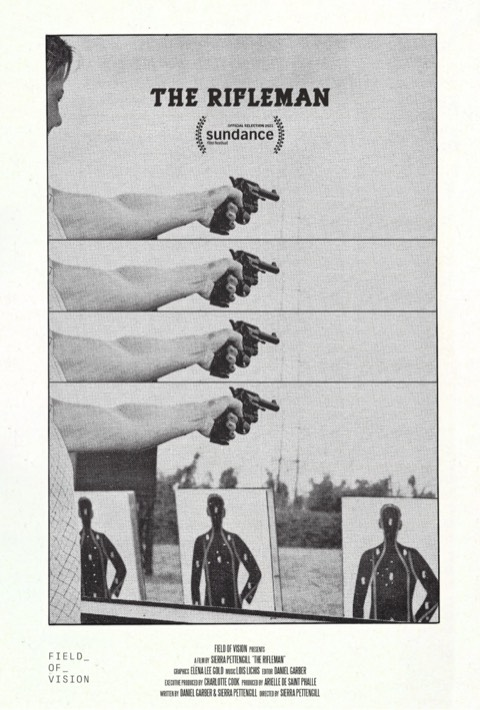
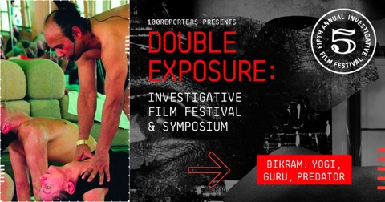

Migration & borders
Immigrants, refugees, asylum and the border.
34 films · 15 sessions · 137 people
Often together with: Latin AmericaHealth & medicineDocumentary craftWar, conflict & the militaryRace & civil rightsMiddle East & South Asia
Films
 A Month in MinnesotaAnnie Sundberg2026 · 40 min
A Month in MinnesotaAnnie Sundberg2026 · 40 min RescueSine Plambech2026 · 90 min
RescueSine Plambech2026 · 90 min- Short Strand: Minneapolis: On the Record + A Special ScreeningLaura Poitras, Rachel Lauren Mueller · Anne Sundberg · Yoruba Richen, Christalyn Hampton2026
- They're HereThey’re Here2026 · 25 min
 No se ve desde acá (You Can't See It From Here)Enrique Pedráza-Botero2025 · 20 min
No se ve desde acá (You Can't See It From Here)Enrique Pedráza-Botero2025 · 20 min PoisonedJoy Ash2025 · 90 min
PoisonedJoy Ash2025 · 90 min Status: VenezuelanMauricio Rodriguez-Pons2025 · 35 min
Status: VenezuelanMauricio Rodriguez-Pons2025 · 35 min
TataLina Vdovîi, Radu Ciorniciuc2025 · 82 min Relentless MemoryPaula Rodriguez Sickert2024 · 93 min
Relentless MemoryPaula Rodriguez Sickert2024 · 93 min The Accidental SpyAnthony Wonke2024 · 98 min
The Accidental SpyAnthony Wonke2024 · 98 min- Phantom ParrotKate Stonehill2023 · 82 min
- This Is Not Financial AdviceZach Ingrasci, Chris Temple2023 · 88 min
 American PainDarren Foster2022 · 106 min
American PainDarren Foster2022 · 106 min Dial HomeCésar Martínez Barba2021 · 20 min
Dial HomeCésar Martínez Barba2021 · 20 min ElenaMichèle Stephenson2021 · 30 min
ElenaMichèle Stephenson2021 · 30 min FleeSPOTLIGHT: Flee2021 · 90 min
FleeSPOTLIGHT: Flee2021 · 90 min LuchadorasPaola Calvo, Patrick Jasim2021 · 92 min
LuchadorasPaola Calvo, Patrick Jasim2021 · 92 min- Since you arrived, my heart stopped belonging to meErin Semine Kökdil2021 · 21 min
 Storm LakeJerry Risius, Beth Levison2021 · 85 min
Storm LakeJerry Risius, Beth Levison2021 · 85 min
The FacilitySeth Freed Wessler2021 · 26 min
The RiflemanSierra Pettengill2021 · 18 min- To Be ReconciledJames Christenson2021 · 29 min
- Águilas/EaglesKristy Guevara-Flanagan2021 · 14 min
- Missing in Brooks CountyJeff Bemiss, Lisa Molomot2020 · 80 min
 Short CutsIn Event of Moon Disaster2020 · 82 min
Short CutsIn Event of Moon Disaster2020 · 82 min
Bikram: Yogi, Guru, PredatorEva Orner2019 · 86 min Dark SunsJulien Elie2019 · 154 min
Dark SunsJulien Elie2019 · 154 min- Lost and FoundOrlando von Einsiedel2019 · 22 min
 Poppy CrashAndalusia Knoll Soloff2019 · 11 min
Poppy CrashAndalusia Knoll Soloff2019 · 11 min- Refuge(e)Sylvia Johnson2019 · 15 min
 Abacus: Small Enough to JailSteve James2016 · 90 min
Abacus: Small Enough to JailSteve James2016 · 90 min Fire at Sea (Fuocoammare)Gianfranco Rosi2016 · 108 min
Fire at Sea (Fuocoammare)Gianfranco Rosi2016 · 108 min- Cartel LandMatthew Heineman2015 · 100 min
- The Storm MakersGuillaume Suon2015 · 66 min
Sessions
- 2026 · Fri Nov 6 · 9:30amPanelRights from the Ground UpAnnie Sundberg, Will Thwaites, James McLaughlin, Seth Stern
- 2025 · Sat Nov 1 · 12:15 PMWorkshopWorkshop: Visual Investigation: Innovative Tactics for Video JournalismKevin Clancy, Jake Godin, Jennifer Smart
- 2024 · Thu Nov 7 · 4:00 PMConversation · DX²Into the Deep Blue: A Conversation with the Outlaw Ocean ProjectIan Urbina, Ben Blankenship, Sig Libowitz
- 2023 · Sat Nov 4 · 9:30 AMWorkshopCrossing BordersJune Cross, Patricia Finneran, Leyi Huang, Chris Lett, Amanda Pike
- 2023 · Fri Nov 3 · 2:30 PMPanelEyes Everywhere: The Widening Net of Government SurveillanceKathleen McClellan, David Novack, Kate Stonehill, Emma Weil, Clayton Weimers
- 2022 · Thu Oct 13 · 11:30 AMPanel · DX²Reframing RepresentationRintu Thomas, Patricia Aufderheide, Sushmit Ghosh, June Cross
- 2021 · Fri Oct 15 · 1:00pmPanelFilming the Near ImpossibleJoshua Glick, Matthew Heineman, Jimmy Chin, Elizabeth Chai Vasarhelyi, Seth Freed Wessler, Antonio Méndez Esparza, Dana Green
- 2021 · Sat Oct 13 · 9:30amPanel · DX²The Pandora Papers: Collaborating for Global and National ImpactScilla Alecci, Mary Inman, Seung-ho Choi, Axel Gordh Humlesjö, Minna Knus-Galán, Susanne Reber
- 2021 · Wed Oct 13 · 4:30pmPanelValues and Ethics in Documentary: the Way ForwardRachel Lears, Talia Rosen, Michael Cascio, Raney Aronson-Rath, Gordon Quinn, Maggie Bowman, Sherry Simpson Dean, Marjan Safinia, Karim…
- 2020 · Wed Oct 14 · 3:00pmPanel · DX²DX Masterclass: Unlocking the Investigative Process with Katherine EbanKatherine Eban
- 2019 · Sat Oct 12 · 10:00 AMPitchCrossing BordersAnne Alvergue, Debra McClutchy, Maren Machles, Carrie Cochran, Jason Fitzroy Jeffers, Jess Swanson, Amanda Pike, Neela Banerjee, Nicole…
- 2019 · Fri Oct 11 · 9:45 AMPitchDocs in Progress PitchSara Barger, Amy Marquis, Jennifer Huang, Rodrigo Dorfman, Peter Eversoll, cai thomas, Serena Ajbani, Andrea Raby
- 2019 · Thu Oct 10 · 4:00 PMPanel · DX²The UndertowRamona Diaz, Courtney Radsch, Andalusia Knoll Soloff, Nanfu Wang, Brenda Coughlin
- 2018 · Sat Oct 13 · 2:15 PMWorkshopWorkshop: Exposing the InvisibleLaura Ranca
- 2017 · Fri Oct 20 · 10:30 AMPanelEmbedded: From Cinema Verité to Immersive JournalismAnas Aremeyaw Anas, Everardo González, Ed Klaris, Suki Kim, Ted Conover
People most involved

 Matthew HeinemanFilmmaker, panelist · 3 editions, 2015–2022
Matthew HeinemanFilmmaker, panelist · 3 editions, 2015–2022- Andalusia Knoll SoloffFilmmaker, panelist · 2019
- Kate StonehillPanelist, filmmaker · 3 editions, 2022–2025
- Johnny HoworthFilmmaker, panelist · 2024
 Paula Rodriguez SickertFilmmaker, panelist · 2024
Paula Rodriguez SickertFilmmaker, panelist · 2024 Joy AshPanelist, filmmaker · 2025
Joy AshPanelist, filmmaker · 2025
 Lina VdovîiPanelist, filmmaker · 2025
Lina VdovîiPanelist, filmmaker · 2025 Enrique Pedráza-BoteroPanelist, filmmaker · 2025
Enrique Pedráza-BoteroPanelist, filmmaker · 2025
 Seth Freed WesslerFilmmaker, panelist · 2021
Seth Freed WesslerFilmmaker, panelist · 2021 Amanda PikePanelist, filmmaker, moderator · 6 editions, 2019–2025The Center for Investigative Reporting
Amanda PikePanelist, filmmaker, moderator · 6 editions, 2019–2025The Center for Investigative Reporting
- Kathryn BigelowFilmmaker · 2015
- Guillaume SuonFilmmaker · 2015
 Sara ColmPanelist · 2015
Sara ColmPanelist · 2015- Terry FitzpatrickPanelist · 2015
- Douglas GillisonPanelist · 2015
- Gianfranco RosiFilmmaker · 2016
- Steve JamesFilmmaker · 2016
- Ti-Hua ChangPanelist · 2016
- Vera SungFilm subject · 2016
- Orlando von EinsiedelFilmmaker · 2019
- Julien ElieFilmmaker · 2019

 Eva OrnerFilmmaker · 2 editions, 2019–2021
Eva OrnerFilmmaker · 2 editions, 2019–2021- Sarah AnthonyFilmmaker · 2019
 Darren FosterFilmmaker · 2022
Darren FosterFilmmaker · 2022